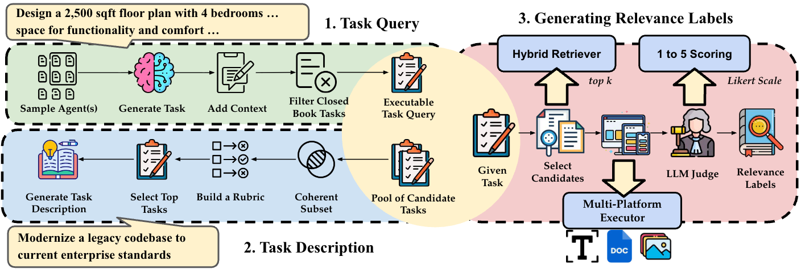

The rapid growth of AI agent ecosystems is transforming how complex tasks are delegated and executed, creating a new challenge of identifying suitable agents for a given task. Unlike traditional tools, agent capabilities are often compositional and execution-dependent, making them difficult to assess from textual descriptions alone. However, existing research and benchmarks typically assume well-specified functionalities, controlled candidate pools, or only executable task queries, leaving realistic agent search scenarios insufficiently studied.
We introduce AgentSearchBench, a large-scale benchmark for agent search in the wild, built from nearly 10,000 real-world agents across multiple providers. The benchmark formalizes agent search as retrieval and reranking problems under both executable task queries and high-level task descriptions, and evaluates relevance using execution-grounded performance signals. Experiments reveal a consistent gap between semantic similarity and actual agent performance, exposing the limitations of description-based retrieval and reranking methods.
We further show that lightweight behavioral signals, including execution-aware probing, can substantially improve ranking quality, highlighting the importance of incorporating execution signals into agent discovery.
We crawl ~10,000 real-world AI Agents from GPT Store, Google Cloud Marketplace, and AgentAI Platform to build AgentBase. Subsequently, we generate a total of 3685 Task Query and 324 Task Description. Here is an overview of our pipeline design:

AgentSearchBench Task and Label Generation
We release the AgentBase dataset, the benchmark tasks (validation and test splits), and over 60K raw agent responses.
Task Description Reranking Results.
| # | Model | NDCG@5 | NDCG@20 | Completeness@5 |
| 1 | Random Shuffle* | 48.27 | 76.60 | 0.00 |
| 2 | MiniLM-L12 v2 | 57.49 | 81.58 | 0.00 |
| 3 | MXBAI Reranker Large | 61.33 | 82.22 | 0.48 |
| 4 | BGE Reranker v2 | 60.55 | 81.97 | 0.96 |
| 5 | Tool-Rank 4B | 61.12 | 82.32 | 0.48 |
| 6 | Tool-Rank 8B | 61.97 | 82.76 | 0.96 |
| 7 | MonoT5 Base MS-Marco | 59.10 | 81.33 | 0.96 |
| 8 | Qwen Reranker 0.6B | 60.47 | 82.04 | 0.48 |
| 9 | Qwen Reranker 4B | 60.58 | 82.84 | 0.00 |
| 10 | RankGPT Qwen-3 32B | 60.78 | 82.36 | 0.48 |
| 11 | RankGPT LLaMA-3.3 70B | 61.24 | 82.34 | 0.96 |
| 12 | RankGPT GPT-5.2 | 64.66 | 84.69 | 0.00 |
Task Query Reranking Results.
| # | Model | NDCG@5 | NDCG@20 | Completeness@5 |
| 1 | Random Shuffle* | 50.98 | 74.61 | 61.00 |
| 2 | MiniLM-L12 v2 | 48.06 | 73.53 | 52.00 |
| 3 | MXBAI Reranker Large | 53.42 | 76.32 | 58.00 |
| 4 | BGE Reranker v2 | 59.84 | 79.59 | 59.00 |
| 5 | Tool-Rank 4B | 64.45 | 81.78 | 59.50 |
| 6 | Tool-Rank 8B | 64.36 | 81.96 | 60.00 |
| 7 | MonoT5 Base MS-Marco | 57.37 | 78.69 | 60.00 |
| 8 | Qwen Reranker 0.6B | 63.72 | 81.08 | 58.50 |
| 9 | Qwen Reranker 4B | 64.53 | 81.97 | 62.50 |
| 10 | RankGPT Qwen-3 32B | 61.05 | 80.18 | 58.50 |
| 11 | RankGPT LLaMA-3.3 70B | 59.92 | 79.80 | 53.50 |
| 12 | RankGPT GPT-5.2 | 64.57 | 81.88 | 56.50 |
Task Description Retrieval Results.
| # | Model | NDCG@20 | Precision@20 | Recall@20 | Completeness@20 |
| 1 | SPLADE v2 | 6.93 | 6.11 | 2.49 | 0.48 |
| 2 | BM25 | 10.78 | 9.25 | 3.69 | 0.48 |
| 3 | ColBERT v2 | 12.80 | 12.19 | 5.12 | 1.92 |
| 4 | Contriever MS-Marco | 14.22 | 13.37 | 5.70 | 1.92 |
| 5 | GTR-T5 Base | 12.96 | 11.92 | 4.93 | 1.92 |
| 6 | MiniLM-L6 v2 | 15.84 | 14.57 | 6.24 | 1.44 |
| 7 | BGE-Large v1.5 | 16.07 | 14.40 | 6.12 | 3.37 |
| 8 | COLT ToolLens | 8.60 | 7.88 | 3.47 | 0.96 |
| 9 | COLT ToolBench | 11.57 | 10.84 | 4.53 | 1.92 |
| 10 | Tool-Embed | 17.19 | 15.94 | 6.41 | 1.92 |
| 11 | ToolRet | 17.21 | 15.77 | 6.69 | 3.37 |
| 12 | E5-Mistral 7B | 11.56 | 10.22 | 4.58 | 1.92 |
| 13 | Qwen-Embedding 8B | 16.51 | 15.29 | 6.15 | 2.40 |
Task Query Retrieval Results.
| # | Model | NDCG@20 | Precision@20 | Recall@20 | Completeness@20 |
| 1 | SPLADE v2 | 3.48 | 2.29 | 3.72 | 18.93 |
| 2 | BM25 | 22.68 | 14.07 | 21.36 | 51.38 |
| 3 | ColBERT v2 | 20.47 | 13.44 | 19.68 | 43.95 |
| 4 | Contriever MS-Marco | 16.72 | 11.12 | 17.07 | 45.11 |
| 5 | GTR-T5 Base | 17.55 | 11.51 | 16.92 | 44.63 |
| 6 | MiniLM-L6 v2 | 22.46 | 14.97 | 21.33 | 51.52 |
| 7 | BGE-Large v1.5 | 26.14 | 17.64 | 25.49 | 52.52 |
| 8 | COLT ToolLens | 7.91 | 5.47 | 7.85 | 30.61 |
| 9 | COLT ToolBench | 12.28 | 8.00 | 12.13 | 38.66 |
| 10 | Tool-Embed | 25.67 | 17.23 | 24.46 | 53.91 |
| 11 | ToolRet | 28.87 | 19.36 | 27.80 | 57.53 |
| 12 | E5-Mistral 7B | 15.29 | 9.77 | 15.62 | 44.49 |
| 13 | Qwen-Embedding 8B | 21.43 | 14.83 | 21.14 | 48.33 |
The following papers are related to the AgentSearchBench:
@article{}